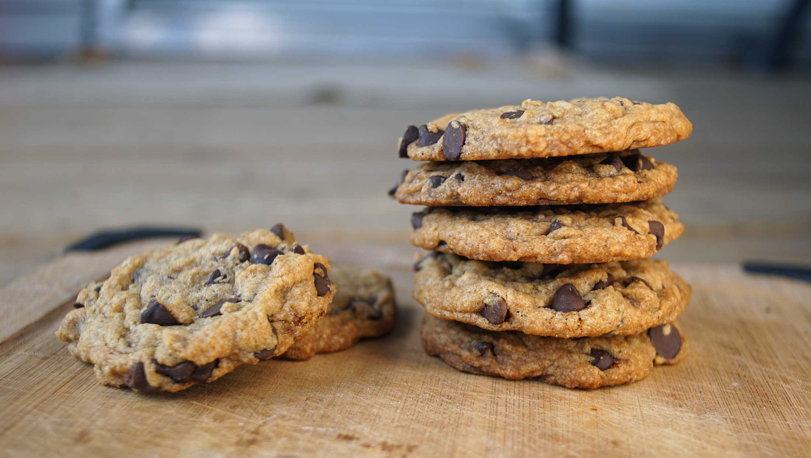

chocolate chip cookies
12 cookies — 20 minutes
We've been making chocolate chips cookies for a while, but never thought it worthy of a recipe because there are so many online already. In the interest of posting absolute basic recipes though, we felt it deserved to be written down, especially because cookie chemistry is difficult. Slight differences in moisture content, altitude, fat content and sugar content can alter the look and texture of a cookie. There are reasons for the quantities and choice of each ingredient, all interact with each other to give cookies their sweet and soft texture.
This recipe is a good base. Substitutions are possible, but changing ingredients—depending on the ingredient—can mess up your recipe. In our suggestions we give examples of good substitutions, and how to modify the recipe to get a good result.Substitutions Flour: If you choose to use spelt flour, a more nutritious alternative, add 5 ml (5 ml) of baking powder to help it rise.
Fat: The fat in cookies is a big part of their structure. We've added vegan butter(or margarine) as it behaves like actual butter, it helps create baked goods that are more tender by shortening gluten strands. When fat coats flour, it slows down the process of gluten formation creating a more tender product ref. To make your own vegan butter, look for the recipe in The Homemade Vegan Pantry by Miyoko Schinner.
Sugar: Sugar is important in cookies, it helps with the flavor, color and texture. The oven temperature causes the sugar to react with the proteins, this is what gives baked goods their brown color. Natural brown sugar is important in this recipe, as it adds moisture to the dough. If you use 100% granulated white sugar the cookie won't spread as well, not unless you add more moisture.
Add-ins: If you have a sensitivity to caffeine use carob chips instead of chocolate chips. Switching to carob won't affect the cookies. Troubleshooting"I followed the recipe, but my cookies don't look the same as yours!" The quirkiness of different ovens makes it difficult to give accurate cooking times. Having a thermometer in your oven is the best way to read the temperature accurately.
Help! Cookie spreading too much! If your cookie is spreading too much, you may have added too much sugar. Sugar is hygroscopic, it absorbs liquid but once it bakes it releases that and if there's too much, then it keeps spreading. Oven temperature is another factor. The hotter the oven, the more quickly the fat melts before the cookies have time to set. Depending on your oven, you may need to bake cookies longer but at a lower temperature.
Help! Cookie not spreading! One of the most common reasons why cookies don't spread is because there's too much flour in the dough. Try using less, and consider increasing the commercial brown sugar by a few tablespoons. This will add slightly more moisture and help the cookies spread. Be sure you're also using room temperature ingredients, especially butter, to promote the best spread and texture.
Read more about cookie chemistry. Recipe inspired from this one.
 all purpose flour120 g
all purpose flour120 g baking soda2.5 g
baking soda2.5 g salt1.25 g
salt1.25 g granulated sugar75 g
granulated sugar75 g natural brown sugar92 g
natural brown sugar92 g vegan butter113 g
vegan butter113 g soy milk45 ml
soy milk45 ml apple cider vinegar2.5 ml
apple cider vinegar2.5 ml flax seeds7 g, ground
flax seeds7 g, ground water45 ml
water45 ml chocolate chips170 g
chocolate chips170 g
cookie mix
- Measure 113 g (1/2 cup) of vegan butter. It should be slightly cooler than room temp.
- Heat oven to 190 °C (375 °F).
- In a small bowl, mix 7 g (1 tbsp) of ground flax seeds with 45 ml (3 tbsp) of water. This is your flax 'egg', let it thicken for 5 minutes.
- Mix 120 g (1 cup) of all purpose flour with 2.5 g (1/2 tsp) of baking soda and 1.25 g (1/4 tsp) of salt.
- In a bowl, cream 75 g (6 tbsp) of granulated sugar, 90 g (6 tbsp) of natural brown sugar with 113 g (1/2 cup) of vegan butter until well incorporated. Then add 45 ml (3 tbsp) of soy milk, 2.5 ml (1/2 tsp) of apple cider vinegar and the flax egg. Mix again until smooth and creamy.
- Add the wet ingredients to the dry, and mix well (but don't over do it).
- Add 170 g (1 cup) of chocolate chips, distribute evenly.
- Scoop up generous balls of dough and lay on a baking sheet, leave plenty of room inbetween.
- Bake cookies until they start to brown and crisp at the edges, depending on your oven this may take 10-15 minutes. My oven is old and bakes at lower temperatures so I need to bake them for the longer time. See notes in above description.